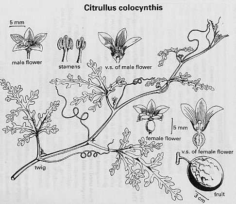

|
ECONOMICALLY
IMPORTANT PLANTS OF INDIA |
| Under-utilized Food and Fodder species and their wild relatives | Contributed by Ms.M.L Annapurna And Dr. Dhanapal, UAS, Bangalore |
Citrullus colocynthis (Linn) Schrad.

DIAGNOSTIC
FEATURES
It is a prostrate or climbing angular stems
and bifid tendrils, found wild in the warm, arid and sandy parts throughout
India. Leaves ovate or triangular, deeply 3-lobed, lobes sinuately innatifid;
flowers monoecious, yellow, solitary, axillary; pepo or gourd 4-10 cm in diam,smooth,
globose, green mottled with yellow blotches, pulp bitter, spongy; seeds numerous,
white or light brown.
Flowers are monoecious.
Andromonoecious (pistilate flowers are replaced by perfect flowers) sex from
is met with some watermelon cultivars in varying proportions. The sequence of
flowering follows a set pattern, namely the first 4-6 flowering nodes would
bear staminate flowers and later pistilate flowers appear in few nodes in the
mai axis and secondary branches in cycles. Sex ratio may range from 25-30:1
to 15:1.
From pure line and mass selection methods, several techniques have been developed.
By inbreeding and pure line selection cultivar with uniformity can be selected.
Other methods have been employed for improvement of the crop, like resistance
breeding and heterosis breeding etc.
Production of seedless watermelon is one of the steps in crop improvrement.
Seedlessness has been induced by triploidy (3x), which is both female and male
sterile.
Phenology :
Fully developed fruits are available between Sept-Mar.
Watermelon is monoecious and female flowers appear on the main branches. The
carolla becomes compact one day before and on the day of anthesis (93). Anthesis
continues from 6:00 to 7:30 a.m., with the peak between 6:30 and 7:00 a.m. The
anthesis is completed in a short time. Dehiscense starts one hour before anthesis
and continues up to 6:30 a.m. At high temperature, stigmatic fluid starts drying,
and the stigma becomes nonreceptive by 3:00 p.m.
Pollinators:
It is insect pollinated (Bees, Butter flies, Wasps) .Pollination is better in
early morning hours and is adversely affected by low humudity. Hand pollination
is resorteed to ensure better fertilisation especially in case of seed production.
Seed Biology :
Seed are numerous and are white are light yellow.
Seed germination is not a problem if the seed are treated with fungicides and planted to avoid seed rot and it takes around 10-15 days to germinate.
Cultivation:
Being a tropical crop it is grown essentially in summer, when the weather is
dry and warm during fruit development. In south and central India crop is almost
round the year since the weather is not severe. In north India early sowing
is done in November and extending up to February. In north-west arid Rajasthan,
a rainy season crop is taken. A well drained soil of loamy type is preferred.
Lighter soils that warm quickly in spring are desired. The average temperature
of 30-40ºC(maximum) and 20-25ºC(Minimum) is required. Sowing is done
at the seed rate of 3.5-5 kg/ha with the row to row distance of 2.5-3.5m and
hill to hill distance of 90-120cm. irrigation is very important both for crop
growth and control of anthracnose. It is always necessary to keep the root zone
well moisten to let the rapid tap root growth. Irrigation frequency is reduced
during harvesting. Manuring and fertilization is required. FYM at the rate of
150-200 quintals per hectare is applied at the time of land preparation.
CLIMATE AND SOIL:
It can be grown on a variety of soil types. Sandy loam to loam soils with good
drainage are preferred for the cultivation of watermelon. Heavier soils with adequate
drainage or silt soil could also be used. When sandy soils are used, they should
be supplemented with humus or compost. The crop can withstand acid conditions
better than other cucurbits. The optimum pH range is 6.5-7.0 . Continuous cropping
of the same land should be avoided. Rotation once every 4-6 years is desirable
and once every 10 or more years if Fusarium and nematodes are a problem.
Watermelon can be grown in subtropical as well as in hot arid regions. It is a
warm season crop and cannot withstand cold climates, especially frost. High humidity
adversely affects the yield and quality of fruits and increases the incidence
of diseases. Seeds germinate best when temperatures are higher than 20°C.
MAJOR PESTS & DISEASES
Pests: Watermelon is infested by several pests, the most serious being
aphids and red pumpkin beetles. The 'red pumpkin beetles Aulacophora foveicollis
(Lucas).(syn. Rhaphidopalpa foveicollis Lucas), A. intermedia . Jacoby, A. cincta
(Fabr.) infest the germinating seeds in March-April and skeletonize the leaves
killing the vines. They can be controlled by spraying Malathion (0.05%),;Endosulfan,
Carbaryl (Sevin) (0.1 to 0.2%), Rogor (0.1%), or Dieldrin (1.5 ml/litre water).
Diseases: A large number of fungi infect the watermelon
vines,the most serious being Fusarium wilt, anthracnose,powdery mildew and downy
mildew.
Fusurium wilt: It is caused by Fusarium oxysporum Schlecht.cx Fr.f. niveum (E.F.Sm.) Snyder & Hansen, It is severe especially when the soil temperature is betwen 20° and 30° and infects at all stages of growth; the germinating seeds rot in the soil, infected roots show a dark discolouration of the area just under the epidermis, etc. The main symptom is yellowing, rolling and eventual drying up of the leaves. Soil fumigants DD- MENCS and Sodium azide are effective controls.
Anthracnose: It is caused by Colletotrichum lagenarium (Pass.) Ell. & Halst, is very destructive to watermelon in South India, particularly during rainy season. It infects the foliage and fruits and causes considerable loss. Young seedlings are killed immediately after emergence; severely infected fruits are smaller, cracked, abnormal or rotten. Dithane M-45 (Maneb) or Dithane Z-78 (Zineb) sprays at 5-7 days intervals are also effective. Removal of all debris after harvest and its destruction to avoid perpetuation of the fungus, proper care to avoid spread of infection through irrigation, and avoiding cultivation of susceptible cucurbits during rainy season arc recommended for minimising the losses.
Powdery mildew(Chitta rog) : It is caused by Erysiphe
cichorium DC. forms a white coating on the stem and leaves; affected fruits
have poor quality and flavour. It is more prevalent in South India. Although
the mildew can be controlled satisfactorily by sulphur dusting certain varieties
are sensitive to sulphur. Bavistin (1 g/litre of water) applied by
thorough drenching of leaves at every spraying and frequent sprays at 5-6 days
interval arc required. The disease spreads quickly as spores are carried by
wind. Cultivars resistant to sulphur injury and resistant to the causal organism
have been evolved at Hessaraghatta. (Seshadri in Bose & Som, 144; Khan et
al, Indian Phytopath, 1976, 29, 306; Punjab Agric Handbook,94, Gangopadhyay,
123).
Downy mildew:
It is caused by Pseudoperonospora cubensis (Berk. & Curt.) Rostov, syn.
Peronoplasmopara cubensis (Berk. & Curt.) Berl. Occurs occasionally during
heavy summer showers. The infected vines have greenish yellow or partly dried
up leaves which die quickly, fruits are small and poor in quality and flavour.
The disease spreads rapidly and the damage; resembles that due to frost. Early
removal of infected vines and spraying Bordeaux mixture (1%), Dithane M-45 (300g/100
litres of water), Captan, Phytolan Zineb (2g/litre of water) at 4-7 days intervals
control the disease (Punjab Agric Handbook, 94; Information from the Head, Division
of Horticulture, Indian Agricultural Research Institute, New Delhi; Tindall,
189).
Among the minor fungal diseases, Leaf spot, Root rot, Blossom end rot, Brown
rot, cottony leak due to Pythium butleri Subram., gummy stem blight caused by
Mycosphaerella citrullina (C.O. Smith) Grcssenb., charcoal rot caused by Macrophomina
phaseoli ;(Maubl.) Ashby are prevalent throughout India. A mosaic disease of
watermelon due to a virus Cucumber Green Mottle Mosaic Virus) is common in .Tamil
Nadu. The diseased vines have mottled leaves and Smaller and fewer fruits. The
disease is sap transmissible through the aphid Aphis gossypii Glove, and Myzus
persicae Sulz.
Parts used
Fruits, seeds, Stems, Leaves.
The fruits and seeds are occasionally used as food in parts of Africa.
The gourds are eaten after pickling which makes them safe for eating.
They are made into preserves after boiling thoroughly in water to remove their bitterness. They are also used as vegetable after removing their rind. Goats and wild game eat the stem and leaves.
The seeds are used for edible purposes as well as for the
oil. In Rajasthan, the seeds are gathered and washed thoroughly with salt water
to remove the bitter principles (mostly contained in the attached pulp) or are
buried with common salt in sand for a few weeks, after which they are washed,
dried, and ground to a flour. The flour is then mixed with bajra flour [Pennisetum
typhoides (Burm.f.) Stapf & Hubbard], or moth flour Vigna aconitifolia (Jacq.)
Marechal syn. Phaseolus aconitifolius Jacq. and baked into thick chapatis. In
africa, the seeds are roasted or boiled and used as food. The kernels are mildly
oleaginous and nutritious. They are eaten with dried dates. They are also made
into a preserve and form an important article of diet in African deserts. The
seeds also serve as chicken feed.
Harvesting Practices
The size of the fruit and colour of the rind do not always indicate the maturity
of the fruit. Maturity is detcimined by exerting a slight pressure on the fruit
with the flat palm; a mature fruit emits a dull muffled sound.In some varieties
even slight pressure results in the cracking of the fruit while in others the
fruit rind on maturity changes from while to yellow at ground spot and the tendrils
wither away. In varieties 'Charleston Gray', and 'S.No.68'the stripes on the
rind disappear at maturity. Harvesting of the fruits' at maturity is neces-
sary as they ripen very little in transit, and on overripening, they emit an
off-flavour and start rotting. They are cut with c 5 cm portion of the stem.
They are shielded from direct sunlight and transported to markets. In transit
they are cushioned with straw to avoid injuries and bruises to the skin. Prior
to loading in trucks, me stem- is cut again and treated with a starch paste
containing copper sulphate to protect the fruits from stem-end rot.
The yield of the fruit varies from 280 to 465 qt/ha. In experimental trials, cultivar 'Shipper' has given a yield of 549, 'Special No. 1' ('Wl'), 485, and 'Dixie Queen' 454 qt/ha, respectively (Thakur & Nandpuri, J Res, Ludhiana, 1974, 11, 30; Whitaker & Davis, 183; Choudhury, 132; Chauhan, 195; Katyal, 100; Knott, 319; Nath & Vashistha, loc. cit.).
For seed extraction the ripe fruits are cut'nlil individually by hand and the seeds arc scraped outof I flesh and washed over a screen with clean water seeds must be dried quickly after washing and storey a cool dry place. The seed yield depends upon the varN1 and the soil ferlility. However, about 200 to 250 kg se^ may be obtained per hectare (Naik, loc. cil.)
Watermelons generally keep well for 15-20 day kept
in a cool shady place after which there is a gradll softening of the pulp around
the seed. For stolin' beyond 3 weeks, temperatures below 4° and 80 to 90^
cent relative humidity are required. Even then the fnnl lend to become pitted
or dented, and develop objee, tionable flavours on storage. A form known as
"Meet Tarbux' from Andhra Pradcsh is reported to keep wit for several months.
In a study carried out at CeritrJ Horticultural Experimental Station, Ranchi,
it waso§ served that in 'Aarka Manik' the TSS percentage ani the rind thickness
did not change during storage. The! was significant reduction in the weight
of the An?
during storage. Tlie seed number and the 100-se'S weight were not influenced
by the post-harvest storagi f the fruits (Chauhan, 196; Choudhury, 133; WhitakI
& Davis, 184; Naik & Singh, Indian J Hort, 1985
Produce and Products
A drug called Colocynth
The mesocarp contains glucose (1.3% on fresh basis) and traces of a-spinasterol. The processed mesocarp may be a good source of pectin. The pectinous mesocarp. powder left after alcoholic extraction possesses appreciable gelatinizing property. The juice of the fruit contains cc-elaterin, citrulluin, citrulluene, and citrulluic acid. A dihydric alcohol, citrullol and p-hydroxybenzyl- methylether have been isolated from the dried pulp and the unripe fruit, respectively. The peel-free flesh of ripe fruits contains a yellow, bitter oil, citbittol.
The petroleum ether extract of peels of the fruit
contains a mixture of 22 hydrocarbons of which the major was hentriacontane
(48.2%), fatty acids (lauric, myristic, palmitic, hexadeccnoic, stearic, arachidic,
oleic and linolcic), primary alcohols (hexadccan-1-ol, octadecan-1-ol, cicosan-1-ol,
doco.san-1-ol, tctracosan- l-ol and hcxacosan-1-ol), odoriferous compounds (citroncllal,
mcthylhcplenonc, methyl eugcnol, phcnylcthylalcohol and 3 unidentified compounds)
and a long chain unsaturalcd kctone (Cz9H560, m p 38-42°). Other compounds
present in the peels are: docosan-1-ol acetate, 10,13-dimcthylpentadcc-13-cn-l-al,
11,14- dimethylhcxadecan-14-ol-2-onc and 10,14- dimclhyl-hcxadecan-14-ol-2-onc.
Presence of citrullol and hcptacosan-1-ol is also reported